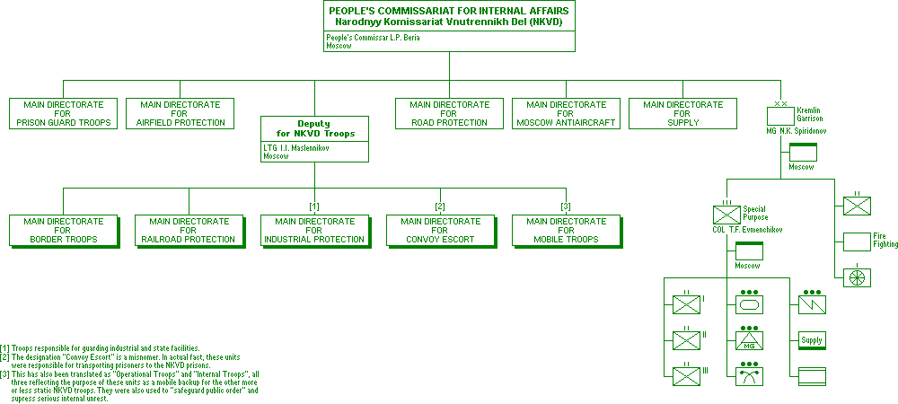

World War II Armed Forces — Orders of Battle & Organizations
Last Updated 10.10.2015
Soviet Armed Forces
In cooperation with Marek Suplat
People's Commissariat for Internal Affairs (NKVD)
22 June 1941
